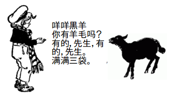

359: 'オノマトペ「荏苒（じんぜん）」'事件¶
依頼人¶
男性。5歳の孫娘を連れて オフィス に依頼に来た。コーヒーを飲みながら閑談の間、孫娘にはキッチンに置いた Momokaちゃん と遊んでいてもらった。
依頼内容¶
依頼者は、陶淵明「古人寸陰を惜しむ」の、
猛志逸四海 猛志 四海に逸せ
騫翼思遠飛 翼を騫げて遠く飛ばんと思へり
荏苒歳月頽 荏苒として歳月頽れ
此心稍已去 此の心稍や已に去りぬ
にある「荏苒（じんぜん）」をずっと一種のオノマトペだと思いこんでいたが、それに疑念が生じてきた。というのも、碁を通じて知り合った中国人留学生にこの字は「じんぜん」とは読まないと聞いたためである。若者は中国語で何度もくりかえし音を教えてくれたが、耳が遠くなってきている老人には良く聞き取れなかった。
はたして、これまでの感じ方に間違いがなかったのか、調査して欲しい。
Tao, Q., 陶潛, 3. (1880). Tao Yuanming ji: 8 juan, juan shou 1 juan, juan mo 1 juan. [China: s.n.].¶
調査報告¶
もちろん、「荏苒」は標準的な意味ではオノマトペではない。しかし、依頼の趣旨はそこにはない。
擬態語：拟态词¶
基本的に中国語には古来、擬音語（象声词、拟声词）はあっても擬態語に相当するものはほとんどない。
Baidu百科によると、
象声词は、拟声词、 [1] 摹声词、状声词，とも呼ばれ、自然の音を模倣して作られた言葉である。 象声词を的確に使うことで話し言葉や書き言葉の鮮やかさやイメージを大きく向上させることができる。 中国語では、単語の音を示す「表音文字」として使われるが、(文字の)意味とは関係ない。
英語でも中国語でも、オノマトペとは一義的に擬音語であって、普通は擬態語は含めない。
上の中国語の説明で、「文字の意味とは関係ない」と断らなければいけないように、漢字は文字のひとつひとつが意味とイメージとを担ってしまうため、かな文字のある日本語のようにオノマトペを自在に作り使うというわけには、なかなかいかない。
さて、同じBaidu百科で「擬態語(拟态词)」を引いてみると、
- ::
擬態語とは、ある動作や状態を象徴的な表現で表す日本語のことである。
となっており、中国語には元来擬態語の概念がないことを示している。これは野口宗親の指摘するところと一致する [Noguchi] 。一方、別の箇所では、次のように擬態語の起源を説明している。
人間は言葉をもつ過程で抽象的な事象を音声で表す必要があった。それらの音声から形容詞に進化したものと、言葉にはなったが形容詞にまでは進化しなかったものがあり、擬態語は後者である。そして、そのようなものとしてなら中国語にもある、としている 1 。
日本語のオノマトペはといえば、品詞分類のどれに属するか定まらないものが多い [Hoshino] 。副詞的に使われることが多いが、特定の品詞として固定されないのは、より生な感覚を保った言葉であるからと言って良いであろう。
言い換えれば、オノマトペは鮮度が命である。だから、つねに新しい言葉が付け加わる余地もあれば、古い言葉がまた新しい感覚で蘇ることもあり得る。
[rěn rǎn]¶
語「荏苒」は我が国でも、かつては文人の書簡や日記に良く使われたのだったが、今日ではほぼ死語となっている。一方、中国では今もポピュラーソングの歌詞などに使われていて、あるいは、現代の作詞家たちにはかえって新鮮な響きのある語と感じられているのかもしれない。
日本でも人気のあったテレビドラマ、《等等啊我的青春》「待って、私の青春」の挿入歌、Wang Yuan Kun(王圓坤)の歌う「時光荏苒」は英訳'Time Flies'で、陶淵明の詩に感じるところに比べてずいぶん軽い。
时光荏苒 究竟该忘记哪些、
いつか時が過ぎ、何を忘れろっていうのか
また、安室奈美恵のTempestの一節の中国語訳、
時は
巡り
时光
荏苒
これらの歌詞の「荏苒」の響きは軽い。ひとつの語が時代をこえて、詩人晩年の過ぎた時間の重みと、青春を駆け抜ける者の時間の感覚との、二つそれぞれを表すことができるのである。
そして、女性シンガーのXie Chun-hua(謝春花)の歌、「借我」や「荏苒冬春去」中の詞などは、ほぼその中間の情緒をとらえている。
ところで、「荏苒」はピンイン表記では、[rěn rǎn]となる。ここで、rはローマ字のrとも英語のrとも似ても似つかない。rとjとzの三つを奥歯を食いしばった口中で一つに混ぜて押し出すような、とても普通の日本人にはマスターできそうにないし、正しく聞き取ることも難しい。
そのせいか、王圓坤が歌うと「ジィンジェン」と聞こえ、謝春花では「レェンリァン」と聞こえる。どちらも聞く人が違えばまた別に聞こえるのかもしれない。やっかいなことに、場合によっては荏苒が「Yen Yan」と聞こえることさえある。
荏苒星霜換¶
しかし、中古音ではどうだったろうか。紫式部が白氏文集の次の詩句に出あった時は、どう読んでいただろうか。
荏苒星霜換 廻環節候推
あるいは、「荏（まめ）」と「苒（のびる、しげる）」の２つの文字が先に入っていたので、語「荏苒」との出会いにおいて、それぞれの文字の漢音をつなげて読んだだろうか。
これらの字の中古音は、 漢語多功能字庫 (香港中文大学人文電算研究中心) にデータがある。また、中古音に比較的近いとされる粵語(広東語)での発音を聞くことができる。「荏」は「ヤムゥ」、「苒」は「ジィム」というように私には聞こえる。他の南方方言での発音も収録されており、なかでは広東省東の汕頭のものが、それぞれ「ジィム」「ジャム」と聞こえて、アクセントの位置も含め「じんぜん」に一番近い感じがする。
廻環節候推¶
ともあれ、三世紀、西普の文人、潘岳の悼亡詩:
荏苒冬春謝 荏苒として冬春さり
寒暑忽流易 寒暑 忽ち流易す
に始まり現代まで、この語は、過ぎていく時間の速さのなかで、さまざまな思いをなまなましくのせることのできる語として、くりかえし使われてきた。この語が日本語の日常に復活することはまずないと思われるが、日本人がおりおりに漢詩に自分の感情をのせて味わうとき、この語をほとんどオノマトペと感じるのは、決して不思議ではないのではないか。
2021年7月16日